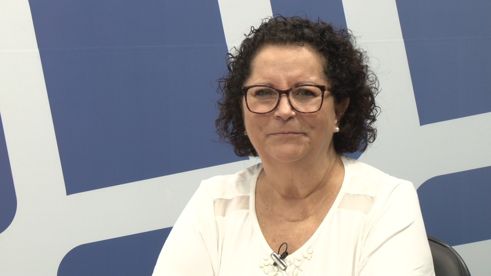
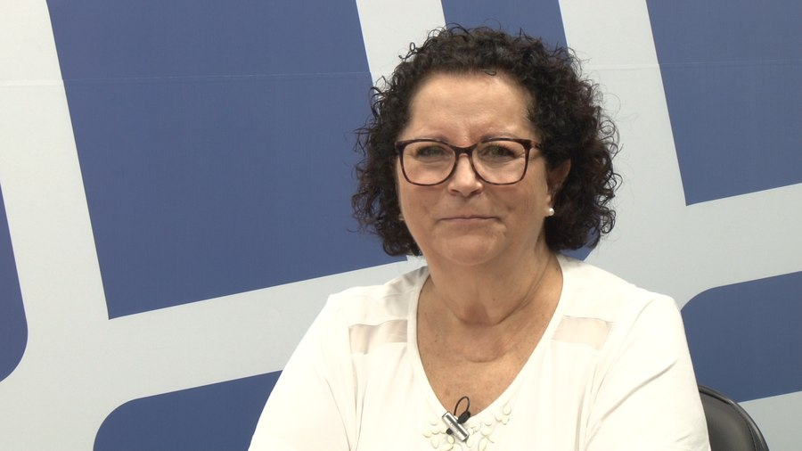
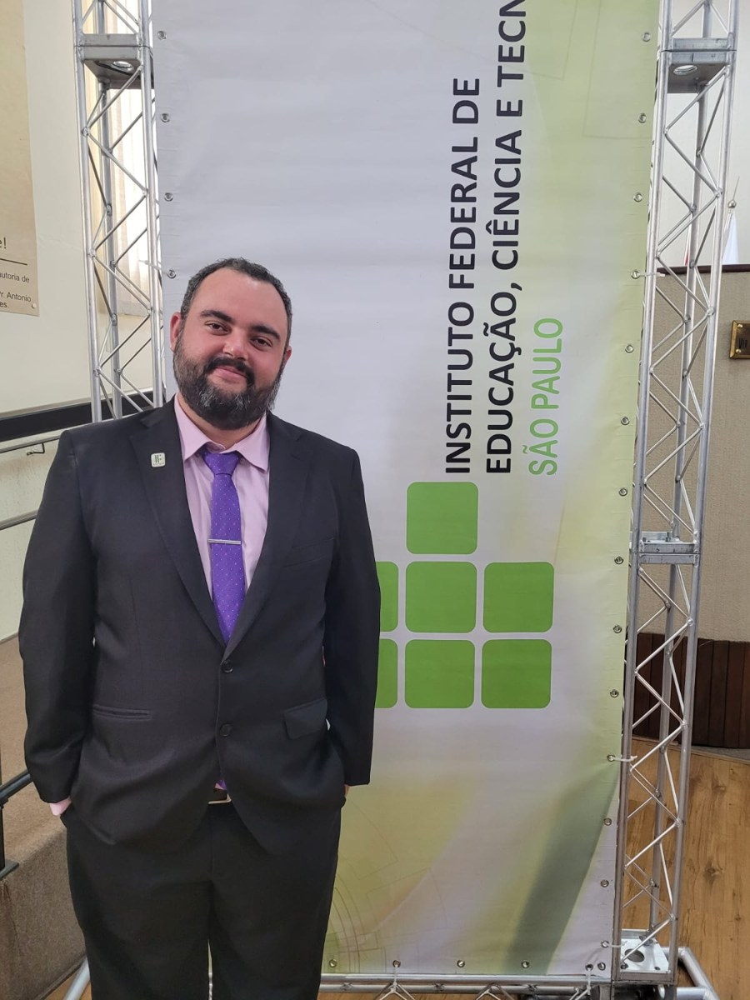

Pesquisas sobre a prática pedagógica
Investigamos a prática de professoras e professores que ensinam matemática, em especial com tarefas exploratório-investigativas e resolução de problemas.
Grupo de Estudos e Pesquisas em Educação Matemática
Universidade Federal de São Carlos
O GEM reúne pesquisadores e professores da UFSCar desde 2003. É vinculado ao Programa de Pós-Graduação em Educação (PPGE) e ao Departamento de Teorias e Práticas Pedagógicas (DTPP) e está registrado no CNPq desde 2004.
Produzimos conhecimento sobre o ensino e a aprendizagem da matemática e sobre o desenvolvimento profissional de quem ensina, em diálogo com a escola.
Investigamos a prática de professoras e professores que ensinam matemática, em especial com tarefas exploratório-investigativas e resolução de problemas.
Grupos de estudo e processos formativos com professores da Educação Infantil, do Ensino Fundamental e Médio e do Ensino Superior.
Orientação de mestrado, doutorado e pós-doutorado no PPGE/UFSCar.
Realizamos os Encontros de Educação Matemática nos Anos Iniciais (EEMAI) e participamos de eventos científicos da área.
Teses e dissertações orientadas, livros e as edições dos encontros organizados pelo GEM.
Coordenação, participantes ativos e estudantes de pós-graduação.

Coordenadora

Coordenadora

Coordenador
O GEM mantém colaborações internacionais. Já nos visitaram Arthur B. Powell (Rutgers University, Estados Unidos), Isolina Rosa Pereira de Oliveira (Universidade Aberta, Portugal) e Maria de Lurdes Serrazina (Universidade de Lisboa, Portugal).
O grupo recebe estudantes de pós-graduação e pesquisadores interessados em Educação Matemática.
Fale com a coordenação